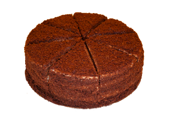
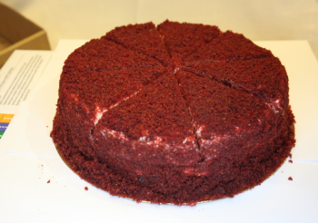
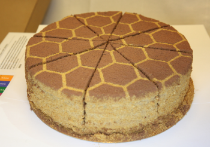
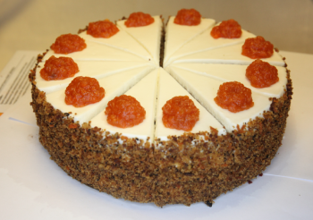

Торты

Сметанник Фокина
Состав: Коржи: сахар-песок, мука пшеничная в\с, вода
питьевая, масло подсолнечное рафинированное дезодорированное,
желток яичный пастеризованный, белок яичный пастеризованный,
какао-порошок, разрыхлитель для теста (сода пищевая, лимонная
кислота), соль поваренная пищевая. Крем: сметана 26% жирности
(сливки нормализованные с использованием закваски), сахар-песок,
загуститель-крахмал модифицированный. Продукция может содержать
следы: грецкого ореха, фундука, кунжута, сельдерея и продуктов
их переработки
Цена за целый торт: 512₽
Цена за кусок: 64₽
Ккал/к Дж на 100 гр: 443/1854

Красный бархат
Состав: Общий состав: бисквит масляный, сырный крем.
Бисквит масляный: мука пшеничная в/c, сахар-песок, маргарин
столовый (масла растительные рафинированные дезодорированные, в
том числе переэтерифицированные: пальмовое и его фракции,
подсолнечное, кокосовое, вода, эмульгаторы (моно- и диглицериды
жирных кислот, эфиры полиглицеридов и жирных кислот), соль,
антиокислители (аскорбилпальмитат, токоферол), регулятор
кислотности (лимонная кислота), ароматизатор, красители
(куркумин, каротин), масло подсолнечное рафинированное высший
сорт, меланж пастеризованный, кефир 3,2%,молоко питьевое
ультрапастеризованное м.д.ж.3,2%, какао-порошок , разрыхлитель
для теста (сода пищевая, лимонная кислота), сода пищевая, соль
поваренная пищевая, смесь для окрашивания (вода, сахар,
краситель пищевой (Е129), загустители (глицерин, камедь
гуаровая, камедь рожкового дерева, Е1414), регулятор кислотности
(кислота лимонная), консерванты (Е202, Е211). Сырный крем: cыр
творожный (творог (нормализованное пастеризованное молоко,
бактериальная закваска, молокосвертывающий фермент микробного
происхождения), загуститель крахмал кукурузный, соль поваренная
пищевая, стабилизаторы камедь рожкового дерева и гуаровая
камедь, регулятор кислотности лимонная кислота, вода питьевая),
сахарная пудра, масло сливочное 82 % жирности, ванилин.
Продукция может содержать следы кунжута, грецких орехов,
фундука, сои, сельдерея и продуктов их переработки.
Цена за целый торт: 736₽
Цена за кусок: 92₽
Ккал/к Дж на 100 гр: 446/1858

Медовик
Состав: молоко ультрапастеризованное 2,5 % жирн., мука
пшеничная хл/п в/с, сахар, спред (заменитель молочного жира
(масло пальмовое рафинированное дезодорированное, масло
подсолнечное рафинированное дезодорированное, краситель
натуральный β-каротин), вода питьевая, эмульгаторы (Е471, Е322),
консервант (Е322 подсолнечный лецитин), ароматизатор натуральный
ваниль), желток яичный пастеризованный, мед натуральный, меланж
яичный пастеризованный, разрыхлитель теста (натрий двууглекислый
(сода), пищевая добавка Е330 (лимонная кислота), крахмал
картофельный), сода, какао-порошок, ванилин. Продукция может
содержать следы грецкого ореха, фундука, кунжута, сельдерея и
продуктов их переработки.
Цена за целый торт: 624₽
Цена за кусок: 78₽
Ккал/к Дж на 100 гр: 317/1332

Морковный торт
Состав:Коржи: сахар-песок, мука пшеничная в\с, морковь
свежая, масло подсолнечное рафинированное дезодорированное
высший сорт, меланж пастеризованный, орех грецкий, корица
молотая, разрыхлитель для теста (сода пищевая, лимонная
кислота), соль. Крем: Сыр творожный (творог (нормализованное
пастеризованное молоко, бактериальная закваска,
молокосвертывающий фермент микробного происхождения),
загуститель крахмал кукурузный, соль поваренная пищевая,
стабилизаторы камедь рожкового дерева и гуаровая камедь,
регулятор кислотности лимонная кислота, вода питьевая), сахарная
пудра, спред (заменитель молочного жира (масло пальмовое
рафинированное дезодорированное, масло подсолнечное
рафинированное дезодорированное, краситель натуральный
β-каротин), вода питьевая, эмульгаторы (моно- и диглицериды
жирных кислот, лецитин), консервант (сорбиновая кислота),
ванилин. Декор: цукаты (морковь свежая, сахар-песок, гель (сироп
глюкозно-фруктозный, вода, сахар-песок, желирующие агенты (агар,
пектин). Продукция может содержать следы ореха фундука, кунжута,
сои, сельдерея и продуктов их переработки.
Цена за целый торт: 760₽
Цена за кусок: 95₽
Ккал/к Дж на 100 гр: 224/951